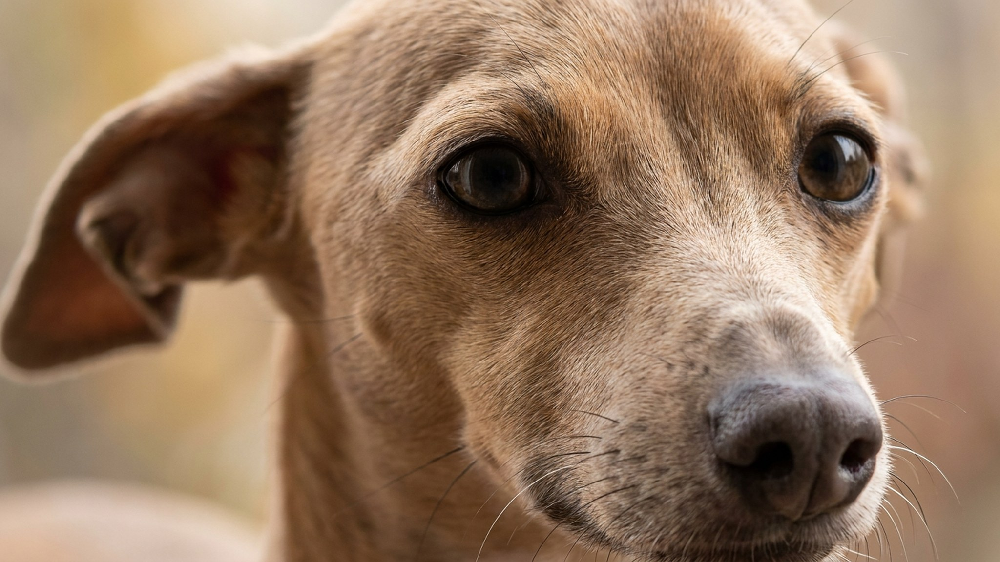

Итальянская левретка выглядит как статуэтка: тонкие ноги, узкая грудь, огромные глаза. На диване она замирает рядом с хозяином и греется под пледом. На улице превращается в пулю — разгоняется до 40 км/ч и выбирает маршрут сама. Эта порода требует понимания своих особенностей — иначе хрупкая кость и мёрзнущий нос превращаются в проблему. Ниже — всё, что нужно знать до того, как левретка войдёт в ваш дом.
🐾 Не уверены, что это опасно?
Опишите симптом в AnimaLife — AI-ветеринар за минуту подскажет, что в пределах нормы, а когда пора к врачу.
Итальянская левретка — собака одного человека. Она выбирает «своего» и буквально следует за ним из комнаты в комнату. Эмоционально чувствительна: реагирует на тон голоса и настроение в доме, обижается на грубость и долго помнит стресс. При этом с посторонними левретка держится настороженно, без агрессии — просто уходит.
С детьми порода уживается при условии, что ребёнок понимает: это не плюшевая игрушка, с которой можно возиться без разбору. Резкие движения и громкие звуки левретку пугают. Другие питомцы воспринимаются спокойно, если знакомство прошло постепенно.
Тонкие кости — главная физическая особенность породы. Прыжок с дивана или кресла высотой 60–70 см создаёт реальную нагрузку на конечности. Неудачное приземление — повод для визита к ветеринару. Это не значит, что нужно держать собаку в вате, но быт стоит адаптировать заранее:
У итальянской левретки практически нет подкожного жира и очень короткая шерсть без подшёрстка. При температуре ниже +15°C собака мёрзнет — на прогулке видно, как она поджимает лапы и горбится. Одежда для левретки — базовая потребность, а не аксессуар.
Левретка сочетает два режима, которые кажутся несовместимыми. Дома она может часами лежать без движения, прижавшись к хозяину. На улице переключается мгновенно: берёт разгон и исчезает за горизонтом. Именно поэтому прогулки — только на поводке или на огороженной площадке. Скорость породы не оставляет шансов поймать убегающую собаку.
Оптимальная нагрузка: две прогулки в день по 20–30 минут. Одна из них должна включать свободный бег в безопасном месте. Левреткам нравятся игры с мячом и погоня — это хорошая разрядка без риска для суставов.
Короткая шерсть — минимум хлопот. Расчёска раз в неделю мягкой щёткой, протирание влажной рукой — и готово. Шерсть почти не линяет, запаха практически нет.
Зубы — другое дело. У мелких пород зубной налёт накапливается быстрее, чем у крупных, и без профилактики переходит в зубной камень. Итальянская левретка в этом смысле не исключение. Приучайте к чистке зубов с щенячьего возраста: специальная щётка или салфетка 2–3 раза в неделю. Профилактическую схему и периодичность профессиональной чистки обсудите с ветеринаром — это индивидуально.
Порода идеально впишется в жизнь человека, который проводит много времени дома, ценит тихого и чуткого компаньона и готов к небольшим бытовым адаптациям. Левретка не подходит семьям с маленькими детьми, которые не умеют обращаться с хрупкой собакой, и людям, которые не хотят думать об одежде и теплозащите питомца. Активным одиночкам и парам без детей — это один из лучших выборов среди маленьких пород.
🐾 Питомец ведёт себя странно?
AnimaLife расшифрует поведение кошки и собаки и подскажет, что делать. Попробуйте бесплатно прямо в мессенджере.
🐾 Понравился разбор?
Подпишитесь на канал — каждый день разбираем по одному тревожному симптому у кошек и собак: что в пределах нормы, а когда пора к врачу. Подпишитесь, чтобы не пропустить разбор, который может спасти здоровье вашего питомца.
Материал носит информационный характер и не заменяет очную консультацию ветеринара.